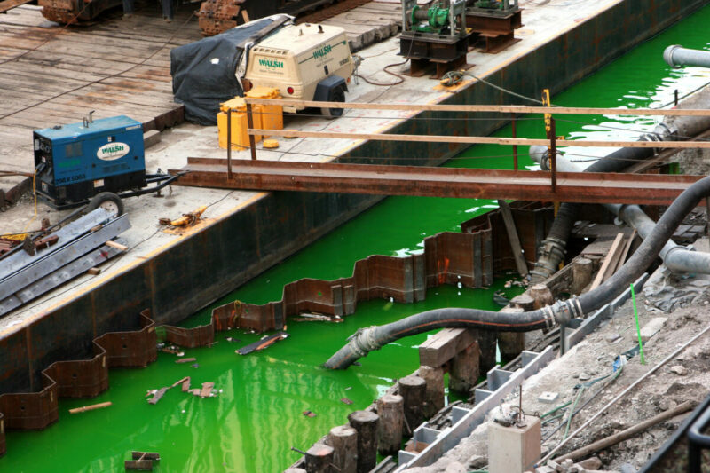

01
便利社會的產物:廢棄物
海洋廢棄物（通常被稱為海洋垃圾或海廢）
是人類活動中有意或無意產生並最終流向海洋的廢棄物總稱。
這些廢棄物除了部分沉入海底外，大部分會漂浮於海面
在海洋水動力的作用下，一部分會向岸漂浮，
成為海岸垃圾；另一些則會在大洋環流系統中部產生積聚
形成大範圍的海洋垃圾帶（如太平洋垃圾帶）。
海岸垃圾傾倒及各種海洋災害（如海難，海洋平台事故等）
會形成海洋廢棄物，此外部分垃圾會在風及河川徑流
作用下入海成為海洋廢棄物。
除人類活動產生的垃圾外，部分自然物質（如浮木）也會成為海洋垃圾的組成部分。
02
核能發電的產物:核廢水
針對核廢水內含的放射性元素，環保團體綠色和平調查發現除了氚以外，污水中還有
鍶90（Strontium-90）、碳14（Carbon-14）、銫137（Cesium-137）
碘129（Iodine-129）和鈷60（Cobalt-60）釕、銠、碲等物質。
碳14的半衰期超過千年，能融入蛋白質、核酸和DNA細胞組成中造成細胞死亡
DNA損傷或潛在的遺傳突變等其他包括銫137、碘129和鈷60等放射元素
容易在海洋食物鏈中長期積累，人們若食用受污染的海洋食品
恐怕會帶來潛在的健康風險。

Ways
拯救海洋的方法:從你我做起
海洋對我們的重要超乎想像，全球有超過十億人依賴海中的魚類獲取蛋白質等營養
更有超過三十億人靠著海洋及沿海的生物多樣性維持生計。
除此之外，海洋為地球提供超過 50% 氧氣
更吸收了近 30% 人為產生的二氧化碳，為地球降溫，減緩氣候變遷。
我們可以做的事有：
1.少用塑膠製品：塑膠製品不易分解，海洋生物可能誤食，或被海中的塑膠纏住，造成牠門的死亡。
2.節能減碳：當海洋吸收大氣中過多的二氧化碳，會令海水酸性增加，更使海洋生態系統面臨崩潰。
3.一起淨灘：別對著海洋或沙灘扔垃圾。也可以更積極一點，加入淨灘的行列，主動清理海洋環境。
4.留意用水習慣：污水處理並不能將所有有害化學物質都清除，不妨改用天然方法洗滌碗筷、清潔廚房
溫熱的洗米水、用橙皮自製清潔劑、茶籽粉都是好幫手！
@copyright 2023/04/23